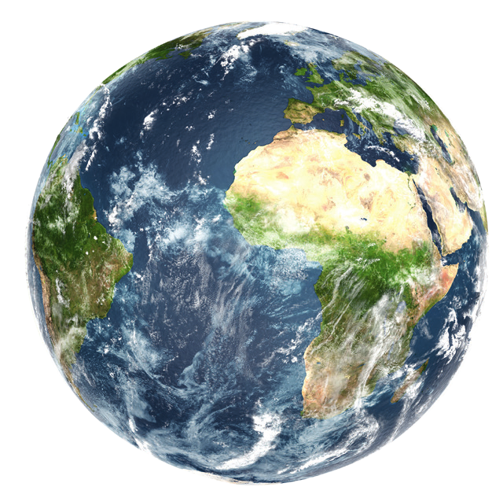

1 /// LA TIERRA
Practicar y avanzar 1-6
La Tierra es un planeta rocoso con forma de esfera achatada por los polos. Sus principales características son las siguientes:
- Tamaño pequeño y densidad elevada, que genera una gravedad alta capaz de retener los gases cerca de su superficie. Esto hace que se forme una atmósfera densa.
- Poca distancia al Sol, lo que determina, junto a la existencia en su atmósfera de gases que ocasionan efecto invernadero, que su temperatura media en superficie sea de 15 °C.
- Núcleo con alto contenido en hierro cuyo movimiento genera un campo magnético que actúa como un escudo de fuerzas al desviar algunos tipos de radiaciones solares.
- Elevada cantidad de calor en su interior, que se acumuló durante su proceso de formación. Constituye el motor de su intensa actividad geológica.
El diámetro de la Tierra es de 12 742 km, y su densidad, de 5,51 g/cm².
La distancia de la Tierra al Sol es de 150 millones de kilómetros.
El 85 % de la masa del núcleo es hierro.
La temperatura del núcleo es de 5 500 °C.
